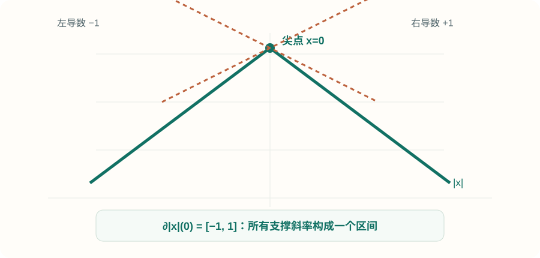

非光滑问题：没有梯度，仍然可以优化
绝对值函数在尖点处不可微，但它仍有清晰的最优解。次梯度把单个导数扩展成一个集合，使稀疏正则化等问题仍能使用严谨的最优性条件。
尖点为什么让普通梯度失效
考虑 f(x)=|x|。当 x>0 时导数为 1；当 x<0 时导数为 −1；在 x=0 左右斜率不相等，所以普通导数不存在。可是函数在零点达到全局最小值，且问题并没有因此变得不可求解。

次梯度：用一个区间替代一个斜率
对凸函数 f，向量 g 是 x 处的次梯度，如果对定义域中的每个 y 都满足 f(y)≥f(x)+gᵀ(y−x)。所有这样的 g 组成次微分集合 ∂f(x)。对一元绝对值函数，尖点处的次微分正好是区间 [−1,1]。
在可微点，次微分退化为只有一个元素的集合 {∇f(x)}。因此它并不是与普通微积分相互冲突的另一套规则，而是把光滑与尖点情况统一起来。
凸问题的一阶最优性条件
若 f 是凸函数，那么 x* 是全局最小点，当且仅当零向量属于 x* 处的次微分。这是凸优化中非常实用的 Fermat 条件。它不要求尖点处存在普通梯度。
注意这个充要结论依赖凸性。对一般非凸、不可微函数，某种广义驻点条件通常只能提供必要性或局部信息，不能直接证明全局最优。
L1 正则化如何把小系数压到零
考虑标量模型：用参数 x 拟合观测 y，同时对 |x| 收取 λ 倍惩罚。平方项希望 x 接近 y，绝对值惩罚希望 x 接近零；两者竞争产生软阈值解。
例如 y=1.5、λ=0.5 时 x*=1.0；若 |y|≤λ，解直接变成零。这个简单标量模型展示了 L1 惩罚产生稀疏性的机制，但多维回归中变量相关性会使各坐标不能总是独立地软阈值化。
交互：观测值与正则强度
移动 y 和 λ，查看最优参数如何从零开始、超过阈值后再随观测值线性增长。
实时计算
解为 sign(y)·max(|y|−λ,0)；λ 越大，更多小幅度信号会被压为零。
Python：次微分与软阈值
代码实现绝对值函数的次微分区间，并直接计算软阈值解。断言在若干候选点附近检查目标值没有更低值；这是有限点检查，解析最优性仍来自凸次梯度条件。
"""Subgradients and the exact soft-threshold solution of a 1-D L1 model."""
from math import isclose
def subgradient_abs(x: float) -> tuple[float, float]:
if x < 0.0:
return (-1.0, -1.0)
if x > 0.0:
return (1.0, 1.0)
return (-1.0, 1.0)
def soft_threshold(y: float, lam: float) -> float:
if lam < 0.0:
raise ValueError("lambda must be nonnegative")
if y > lam:
return y - lam
if y < -lam:
return y + lam
return 0.0
def objective(x: float, y: float, lam: float) -> float:
return 0.5 * (x - y) ** 2 + lam * abs(x)
if __name__ == "__main__":
lam = 0.5
cases = (-2.0, -0.25, 0.25, 2.0)
for y in cases:
x = soft_threshold(y, lam)
print(f"y={y:5.2f} -> x*={x:5.2f}, objective={objective(x, y, lam):.4f}")
assert subgradient_abs(0.0) == (-1.0, 1.0)
assert isclose(soft_threshold(2.0, 0.5), 1.5)
assert isclose(soft_threshold(-2.0, 0.5), -1.5)
assert isclose(soft_threshold(0.25, 0.5), 0.0)
for y in (-3.0, -1.0, 0.0, 1.0, 3.0):
x_star = soft_threshold(y, lam)
for candidate in (x_star - 0.1, x_star, x_star + 0.1):
assert objective(x_star, y, lam) <= objective(candidate, y, lam) + 1e-12练习：求解 minₓ ½(x+2)²+0.75|x|。先判断解的符号，再写出对应的一阶次梯度方程。
边界与常见混淆
- 凸次微分与 Clarke 广义梯度的定义背景不同，不能在所有非凸问题中不加说明地互换。
- L1 正则项不可微，但目标可以是凸的；不可微不等于非凸。
- 对非光滑目标直接套用普通梯度下降，可能在尖点附近出现错误的梯度估计。
- 实际算法常用近端梯度、坐标下降或 bundle 方法；软阈值是特定模型的近端算子，不是任意非光滑问题的通用解法。